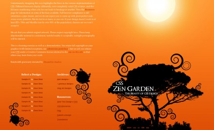
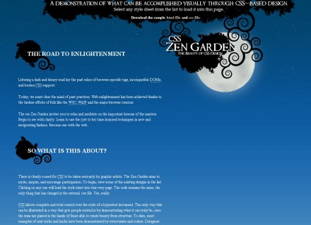

Daybreak is a collaborative design experiment with Tony Dewan as a submission to the CSS Zen Garden project. Tony produced the graphics and aesthetic of the piece, while I coded the CSS and solved technical roadblocks.
After reviewing the CSS Zen Garden's official designs, we quickly discovered a trend in the submissions: They were chosen due to design aesthetics or technical complexity. For our experiment, we didn't want to force ourselves into either category, so we spent considerable time on both strategies.
Early in the conceptual stage, we decided we wanted to tell a story as the user interacts with the design. To understand how to accomplish this, you must first understand how a story is traditionally driven: The narrative progresses at the speed of reader, i.e. the reader is in control of the story. In terms of web browsing, one of the most fundamental controls granted to a user is the ability to scroll a page. Based on that precept, we wanted to tell a story as the user scrolls the page.
Eventually, we settled on the idea of the transition from night to day. Since it is an experience everyone shares, the story is instantly relatable to the user. Given the idea, the design would require several elements to tell the story: The moon and sun to respectively establish the night and day and a sky assisting the transition between the two. In order to give a visual anchor to the user and the world in this story, the foreground must be the ground to the scrolling moon, sun, and sky. As an anchor to this world, the element should be something that is natural, strong, and enduring. A blooming tree would be the anchor to this story.
To technically achieve a smooth transition from the spectrum of cool to warm colors while overlaying a visually complex tree element, the tree would need to be created as a 24-bit PNG image. (24-bit includes an alpha channel, rather than merely a "transparent" pixel, like 8-bit PNG and GIF.) However, as web designers, we understand the consequences of such power: It summons the need to resolve the problem for the sake of backwards compliance. For this case, Internet Explorer 6 has a notorious history of torturing designers by not naturally supporting 24-bit PNG transparency. Though the blue-block-of-death can be fixed relatively quickly with some JavaScript hackery, this will not work for the CSS Zen Garden project, since all submissions run on the same HTML template, i.e. style sheets and images are the only tools that can be utilized.
Thus, we have three options:
To improve our chances to be accepted as an official design and strengthen the piece technically, we chose option three. Therefore, any PNG images were converted to GIF.
The only alteration to this process were the rendering of the section headlines. Since the headline font was previously rendered in the transparent image, the selectable text was removed from the viewing area. However, without gradual transparency granted by an alpha channel, complex serif text on a transparent background appear jagged and unpolished. Thus, for IE6, any headline text was reintroduced in the viewport rendered with a generic serif font and not pre-rendered in the image with a custom font.
As another roadblock, IE6 cannot fix elements to the bottom of the viewport naturally in CSS. The way around this was to produce a different but aesthetically similar visual anchor and affix it absolutely to the top of the page. This new image places the user "underneath" the tree, seeming as if selected branches are hanging low in the top of the user's peripheral vision.
As the page scrolls toward the bottom of the screen, the sun dawns revealing additional navigation.
Alternative graphics were produced to gracefully degrade for IE6.
{kind=link}
{kind=link}